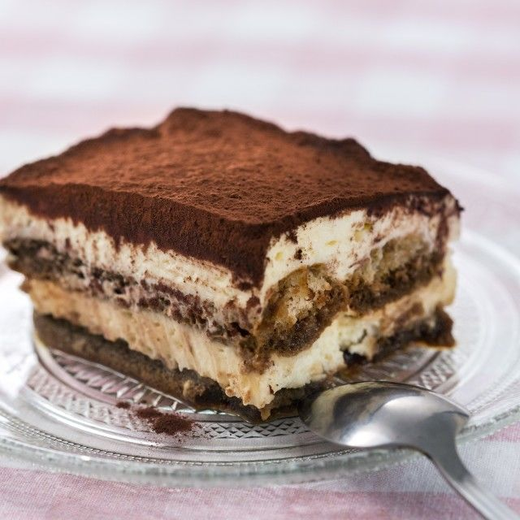

Pripremite tiramisu i uživajte u omiljenoj slastici, ne samo izgledom već i okusom.
Jednostavno piškote kratko namočite u kavu i maraskino te prelijte kremom od mascarponea koja je nježnog slatkastog okusa te pospite kakaom u prahu.
Ingredients
4 jaja
100 g šećera
5 žlica maraschina
500 g mascarponea
1 vrećica Vanilin šećera Dolcela
200 ml crne kave
1 žličica šećera
200 g piškota
50 g čokolade
1-2 žlice kakaa u prahu
Steps
Žumanjke i šećer pjenasto izmiješajte električnom miješalicom te umiješajte 1 žlicu maraschina.
Zatim kremu kuhajte na pari (oko 10 minuta) dok se ne počne zgušnjavati. Kremu ohladite uz miješanje.
Dodajte mascarpone i na kraju lagano umiješajte čvrsti snijeg od bjelanjaka u koji ste dodali vanilin šećer.
Pomiješajte ohlađenu kavu, šećer i 4 žlice maraschina.
Piškote kratko umočite u kavu i položite po dnu posude (25x16 cm).
Prelijte polovicom kreme i pospite čokoladom narezanom na komadiće.
Posložite drugi red namočenih piškota te prelijte ostatkom kreme.
Kolač ostavite hladiti nekoliko sati ili preko noći.